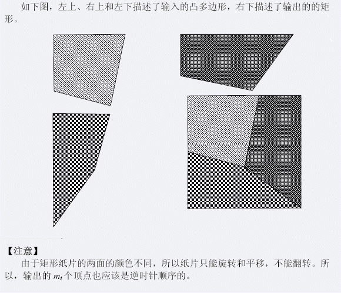

第一行只有一个正整数n（1≤n≤8），表示凸多边形的个数。
以下n行每一行描述一个凸多边形，
格式如下：第i+1行的第一个数mi（3≤mi≤8）表示凸多边形的点数，
接下来有mi对实数，一对实数给出了一个点的坐标，
这mi个顶点按照从任意一个顶点出发的逆时针顺序给出。
且所有实数都在(-1000,1000)的范围内，小数点后不超过8位。
3
4 0 0 4 -1 5 4 0 4
4 0 0 5 -1 8 3 0 3
4 0 0 0 -8 3 -4 4 0
Yes
0 4 4 3 5 8 0 8
5 8 4 3 8 0 8 8
0 0 8 0 4 3 0 4